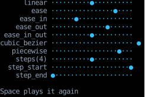

Animation
Two hooks built on use_clock give a component an animation's progress,
a number from 0 to 1 it draws whatever it likes from:
use_progress plays once and holds at its end,
and use_loop repeats.
counterweight.animation holds the pure half:
CSS's easing functions, which shape how an animation moves,
and between, which picks one phase out of an animation, as a keyframe does.
A browser animates a property for you, given a CSS animation or transition. Here the component computes each frame itself, from the progress the hook returns, so anything it can compute from a number can move: a bar's length, a character's position, a gradient's angle.
Playing once
use_progress(duration) rises from 0 when the component mounts to 1 once duration has passed,
and holds there, as a CSS animation that plays once and fills forwards does:
@component
def filling_bar(plays: int) -> Text:
# Starts again from 0 each time `plays` changes, and stops reading the clock once it's full.
progress = use_progress(timedelta(seconds=2), deps=(plays,))
return Text(content=bar(ease_in_out(progress)), style=text_color("teal", 400))
@component
def replayable() -> Div:
plays, set_plays = use_state(0)
def on_input(event: InputEvent, _: Receiver) -> InputResponse:
match event:
case KeyPressed(key=Key.Space):
set_plays(lambda plays: plays + 1)
return ()
case _:
return None
return Div(
style=col | gap(1),
on_input=on_input,
children=(filling_bar(plays), Text(content="Space plays it again", style=text_color("slate", 400))),
)
It starts again whenever one of its deps changes, compared with == as use_effect's are,
so a component that stays mounted can play it more than once.
Giving the component a new key, which remounts it, starts it again too.
Once it reaches 1, it stops reading the clock,
so a finished animation re-runs its component only once more, at the next frame,
and costs nothing after that.
A duration of zero is at 1 at once, so a component can skip its animation,
as a thumbnail that shows only the last frame would.
Easing
The progress rises at a steady rate.
Pass it through an Easing to shape the motion,
as the bar above does with ease_in_out.
These are CSS's:
linear, a steady rate, andpiecewise_linear, straight lines between stops, as CSS'slinear()function draws.cubic_bezier, a curve through two control points, as CSS'scubic-bezier(), and the curves CSS names:ease,ease_in,ease_outandease_in_out. A control point'syoutside 0 to 1 overshoots, going past the end and coming back.steps, which moves in equal jumps, as CSS'ssteps(), andstep_startandstep_end, which jump once.
An easing is any function from a float to a float, so a curve CSS doesn't name, such as lambda t: t**3, is one too.
Here one progress moves a dot along each track, through a different easing on each row:
EASINGS: tuple[tuple[str, Easing], ...] = (
("linear", linear),
("ease", ease),
("ease_in", ease_in),
("ease_out", ease_out),
("ease_in_out", ease_in_out),
("cubic_bezier", cubic_bezier(0.34, 1.56, 0.64, 1)), # Overshoots the end, then comes back.
("piecewise", piecewise_linear(0, (1, 0.6), (0.8, 0.8), 1)), # Reaches the end early and bounces once.
("steps(4)", steps(4)),
("step_start", step_start),
("step_end", step_end),
)
END = WIDTH - 4 # Room past the end of the track for an easing that overshoots it.
def track(eased: float) -> str:
position = min(max(round(eased * END), 0), WIDTH - 1)
return "".join("●" if x == position else "·" if x <= END else " " for x in range(WIDTH))
@component
def easings() -> Div:
plays, set_plays = use_state(0)
# One progress, eased a different way on each row.
progress = use_progress(timedelta(seconds=2), deps=(plays,))
def on_input(event: InputEvent, _: Receiver) -> InputResponse:
match event:
case KeyPressed(key=Key.Space):
set_plays(lambda plays: plays + 1)
return ()
case _:
return None
return Div(
style=col,
on_input=on_input,
children=(
*(
Div(
style=row | gap(1),
children=(
Text(content=f"{name:>12}", style=text_color("slate", 400)),
Text(content=track(easing(progress)), style=text_color("sky", 400)),
),
)
for name, easing in EASINGS
),
Text(content="Space plays it again", style=margin_top(1) | text_color("slate", 400)),
),
)

linear ··········●··········
ease ················●····
ease_in ······●··············
ease_out ··············●······
ease_in_out ··········●··········
cubic_bezier ····················· ●
piecewise ·················●···
steps(4) ··········●··········
step_start ····················●
step_end ●····················
Space plays it again
Halfway through, linear and ease_in_out are halfway along,
ease and ease_out are ahead and ease_in behind,
the overshooting cubic_bezier is already past the end of its track,
and the step easings are wherever their last jump left them.
An easing's output isn't clamped, so the component decides what a value past 0 or 1 draws as:
this one keeps room past the end of each track for the overshoot.
Something moving whole, such as a box sliding into place, usually looks best eased in and out. Something that happens at a steady rate, such as typing or a sweep, usually looks best not eased at all, since its pace is part of what it shows.
Phases
One animation can run several motions one after another, or overlapping.
between(progress, start, stop) is how far progress is through the part from start to stop:
0 before it, 1 after it, as a CSS keyframe's offsets pick out a phase.
Each phase can take its own easing:
@component
def staggered() -> Div:
progress = use_progress(timedelta(seconds=3))
return Div(
style=col,
children=tuple(
# Each bar fills in its own half of the animation, a quarter after the one above it.
Text(content=bar(ease_out(between(progress, start, start + 0.5))), style=text_color("amber", 300))
for start in (0, 0.25, 0.5)
),
)
Looping
use_loop(period) is where in an animation that repeats every period the component is, from 0 up to 1,
as a CSS animation whose iteration count is infinite is.
For one that goes there and back, as animation-direction: alternate does,
fold the loop's progress in half:
@component
def bouncing() -> Div:
is_playing, set_playing = use_state(True)
there_and_back = 1 - abs(2 * use_loop(timedelta(seconds=2), is_playing=is_playing) - 1)
position = round(ease_in_out(there_and_back) * (WIDTH - 1))
def on_input(event: InputEvent, _: Receiver) -> InputResponse:
match event:
case KeyPressed(key=Key.Space):
set_playing(lambda is_playing: not is_playing)
return ()
case _:
return None
return Div(
style=col | gap(1),
on_input=on_input,
children=(
Text(content="·" * position + "●" + "·" * (WIDTH - 1 - position), style=text_color("rose", 400)),
Text(content="Space pauses and plays", style=text_color("slate", 400)),
),
)
With is_playing=False, the loop stops reading the clock and holds where it is.
Unlike a paused CSS animation, it doesn't resume from where it stopped:
it carries on from wherever the time since it started puts it,
so the dot here jumps ahead when it plays again.
Like use_progress, it starts again from 0 whenever one of its deps changes.
A loop that starts while it isn't playing, as it mounts or as its deps change,
holds at 0 and starts when it plays,
as a CSS animation that starts paused does.
Frames
While an animation moves, its hook reads the clock every interval,
FRAME_INTERVAL unless it's given another,
which is 20 frames a second.
Each frame re-runs the component that calls the hook, and nothing else,
so call it in the component that draws the animation,
not in one that also renders things that don't change with it
(see Performance).
Every animation counts from when it started, on the app's clock,
so on a FrozenClock it moves only when an autopilot moves the clock.
advance moves it on a frame at a time,
so a recording or a test shows each frame rather than jumping to the end,
as the recordings on this page do (see Autopilot and Recording).
API
use_progress(
duration: timedelta,
deps: tuple[object, ...] = (),
*,
interval: timedelta = FRAME_INTERVAL,
) -> float
How far through an animation duration long the calling component is,
from 0 when it starts, rising to 1, where it holds, as a CSS animation that plays once and fills forwards does.
Shape the motion by passing the result to an easing function.
| PARAMETER | DESCRIPTION |
|---|---|
duration
|
How long the animation takes. Zero ends it as soon as it starts, at 1.
TYPE:
|
deps
|
The values the animation depends on.
It starts when the component mounts, and again whenever any of them change (compared with |
interval
|
How often it reads the clock while it moves.
Once it reaches 1 it stops reading the clock, so a finished animation re-runs its component
only once more, at the next
TYPE:
|
| RAISES | DESCRIPTION |
|---|---|
ValueError
|
If |
use_loop(
period: timedelta,
deps: tuple[object, ...] = (),
*,
is_playing: bool = True,
interval: timedelta = FRAME_INTERVAL,
) -> float
Where in an animation that repeats every period the calling component is, from 0 up to (but not including) 1,
as a CSS animation whose iteration count is infinite is.
| PARAMETER | DESCRIPTION |
|---|---|
period
|
How long one time through the animation takes.
TYPE:
|
deps
|
The values the animation depends on.
It starts when the component mounts, and again from 0 whenever any of them change (compared with |
is_playing
|
Whether it moves. While it doesn't, it stops reading the clock, holding where it is.
One that starts while it isn't playing, as it mounts or as its
TYPE:
|
interval
|
How often it reads the clock while it plays.
TYPE:
|
| RAISES | DESCRIPTION |
|---|---|
ValueError
|
If |
How far along an animation has got, given how far through its time it is, both from 0 to 1,
as CSS's <easing-function> is. Any function of that shape is one.
module-attribute
FRAME_INTERVAL = timedelta(milliseconds=50)
How often an animation hook reads the clock while it's moving, unless it's given an interval: 20 frames a second.
Moves at a steady rate: CSS's linear keyword.
Moves in straight lines between stops, as CSS's linear() function does.
Each stop is an output alone, an (output, input) pair, or an (output, start, end) triple,
which holds the output from the input start to end, as linear(0, 0.25 75%, 1) is
piecewise_linear(0, (0.25, 0.75), 1).
As in CSS, the first stop's input defaults to 0 and the last's to 1,
an input less than an earlier stop's is raised to it,
and stops without inputs are spread evenly between the stops on either side that have them.
| RAISES | DESCRIPTION |
|---|---|
ValueError
|
If there are fewer than two stops. |
Moves along the cubic Bézier curve from (0, 0) to (1, 1) with control points (x1, y1) and (x2, y2),
as CSS's cubic-bezier() function does.
A y outside 0 to 1 overshoots, so the animation goes past its end, or before its start, and comes back.
| RAISES | DESCRIPTION |
|---|---|
ValueError
|
If |
module-attribute
ease = cubic_bezier(0.25, 0.1, 0.25, 1)
Starts quickly and slows gently to the end: CSS's ease, its default for transitions.
module-attribute
ease_in = cubic_bezier(0.42, 0, 1, 1)
Starts slowly and speeds up to the end: CSS's ease-in.
module-attribute
ease_out = cubic_bezier(0, 0, 0.58, 1)
Starts quickly and slows to the end: CSS's ease-out.
module-attribute
ease_in_out = cubic_bezier(0.42, 0, 0.58, 1)
Starts slowly, speeds up, and slows to the end: CSS's ease-in-out.
steps(
count: int, position: StepPosition = "jump-end"
) -> Easing
Moves in count equal jumps rather than smoothly, as CSS's steps() function does,
such as to step through the frames of a spinner.
position says where the jumps are: "jump-end" holds each step until it ends (CSS's default),
"jump-start" jumps at the start of each, "jump-none" at neither end, so it holds 0 and 1 for a step each,
and "jump-both" at both.
| RAISES | DESCRIPTION |
|---|---|
ValueError
|
If |
StepPosition = Literal[
"jump-start", "jump-end", "jump-none", "jump-both"
]
Where steps puts its jumps, as CSS's <step-position> does.
module-attribute
step_start = steps(1, 'jump-start')
Jumps to the end as soon as it starts: CSS's step-start.
module-attribute
step_end = steps(1, 'jump-end')
Holds the start until the end, then jumps: CSS's step-end.
How far progress is through the part of an animation from start to stop: 0 before it, 1 after it,
as a keyframe's offsets pick a phase out of a CSS animation,
so one animation's progress can run several motions one after another, each with its own easing.
| RAISES | DESCRIPTION |
|---|---|
ValueError
|
If |